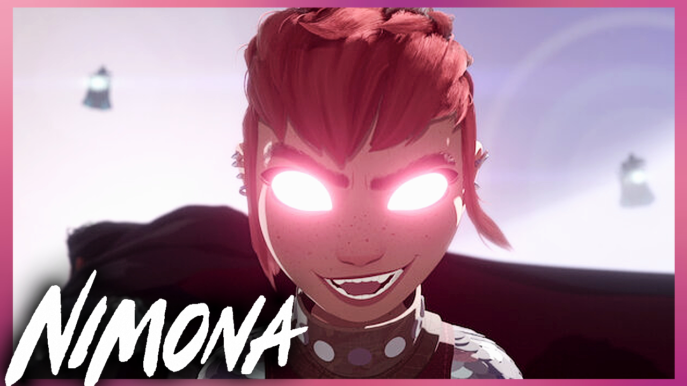

PELÍCULA DESTACADA
EL RESUMEN QUE NO TE PUEDES PERDER
Una historia, una opinión y todos los detalles que necesitas conocer. Descubre nuestro contenido destacado de la semana.
VER EN YOUTUBEDesde grandes clásicos hasta historias que merecen ser recordadas. Revivimos películas, compartimos opiniones y descubrimos qué hay detrás de cada historia.
Aquí encontrarás resúmenes, análisis y opiniones de películas de diferentes épocas y géneros. Porque algunas historias terminan cuando aparecen los créditos, pero la conversación apenas comienza.
Una historia, una opinión y todos los detalles que necesitas conocer. Descubre nuestro contenido destacado de la semana.
VER EN YOUTUBEResúmenes, opiniones y mucho más.



¿Realmente es tan buena como recordamos?
VER VIDEO →


Disfruta de nuestros resúmenes directamente desde YouTube.